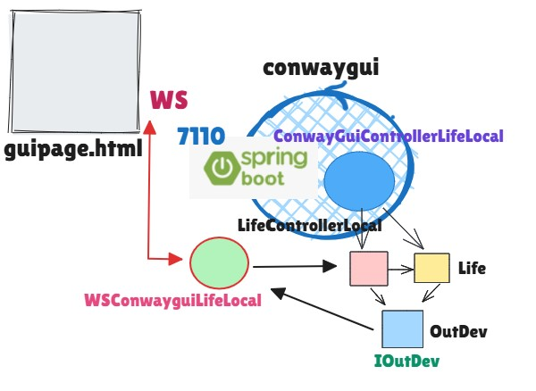

conwaygui: un processo di sviluppo¶
Definizione del software relativo al core-business applicativo (con Cell e Grid) e suo testing
Definizione di un progetto SpringBoot partendo da Primi passi con SpringBoot
Directory userDocs con diario di bordo
conwaygui_v0.htmldanel package
conway(o implicito, con un file jar) del core-bsuiness Java nel workspace del progettoDefinizione del Controller della GUI ConwayGuiControllerLifeLocal con funzione getserverip che restituisce l’IP del server
Definizione della pagina HTML guipage.html
Definizione del codice JavaScript da inserire nella pagina HTML per la costruzione della mappa
Definizione lato client (commsocket.js) e lato server (WSConwayguiLifeLocal) della interazione via WebSocket
Definizione del dispositivo ConwayOutput che invia dati via WebSocket
Il codice Java inserito come parte integrante del servizio:
ha la stessa struttura introdotta in ConwayLife25 in Java
la classe Life non ha il compito di visualizzare le celle, compito assunto dal ConwayGuiControllerLifeLocal
elimina ogni dispositivo di input, in quanto i comandi-utente vengono inviati tramite WebSocket
definisce un dispositivo di output
ConwayOutputche implementa IOutDev interface inviando messaggi alla pagina HTML tramite WebSocket
In questo modo abbiamo un primo microservizio.

ConwayGuiControllerLifeLocal: esegue i comandi inviati da
WSConwayguiLifeLocalLife: esegue la logica del gioco, come in precedenza
ConwayOutput: usa
WSConwayguiLifeLocalper visualizzare ‘on the fly’ lo stato di una cellaWSConwayguiLifeLocal: Estende AbstractWebSocketHandler di org.springframework.web.socket.handler. Fa update delle pagine (metodo broadcastToWebSocket) quando invocato da ConwayOutput.
{kind=link}